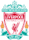
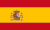

Piłka Nożna

| Nr | Logo | Klub | Rozgrywki | Wartość rynkowa |
|---|---|---|---|---|
| 1 |  | Liverpool FC | Premier League | 1,10 mld € |
| 2 | Manchester City | Premier League | 1,06 mld € | |
| 3 | Bayern Monachium | Bundesliga | 891,40 mln € | |
| 4 | FC Barcelona | La Liga | 888,00 mln € | |
| 5 | Paris Saint Germain | Ligue 1 | 855,85 mln € | |
| 6 | Real Madryt CF | La Liga | 842,00 mln € | |
| 7 | Chelsea FC | Premier League | 827,05 mln € | |
| 8 | Manchester United | Premier League | 769,35 mln € | |
| 9 |  | Atletico Madryt | La Liga | 766,70 mln € |
| 10 | Tottenham Hotspur | Premier League | 742,55 mln € |
Transfermarkt - jest to prawdopodobnie najrzetelniejszy portal, prowadzący wszelkiego rodzaju statystyki, począwszy od pieniędzy aż do liczby strzelonych goli. Prowadzi swoją własną wycenę piłkarzy na podstawie ich charakterystyki i formy. Wszystkie statystyki przedstawione na tej stronie opieram o ten portal.
Bramki w minionej dekadzie - portal Transfermarkt na początku 2020 roku przygotował zestawienie piłkarzy z największą liczbą bramek. Zestawienie otwiera Lionel Messi (522 bramki w 521 meczach), następny jest Cristiano Ronaldo (477 goli w 489 spotkaniach), a podium zamyka nasz "Polak Rodak" Robert Lewandowski (324 bramki w 454 spotkaniach). W czołowej piątce znajdują się jeszcze: Edinson Cavani (309 goli w 447 spotkaniach) i Luis Suarez (303 bramki w 445 spotkaniach). Nie przedstawie ogólnej statystyki bramek, ponieważ nie do końca wiadomo jak liczyć bramki niektórych zawodników, np. według źródeł Pele ma 750 bramek, ale on sam sądzi, że ma ich około 1200. Kiedyś nie było wielkich baz danych zliczających te statystyki, więc nie przytoczę ich.
Asysty w minionej dekadzie - portal Transfermarkt na początku 2020 roku przygotował zestawienie piłkarzy z największą liczbą asyst. Na pierwszym miejscu znajduje się Lionel Messi (205 asyst w 521 spotkaniach), następnie Angel Di Maria (188 asyst w 450 spotkaniach), a podium zamyka Thomas Muller (172 asysty w 480 spotkaniach). W czołowej piątce znajdują się jeszcze: Luis Suarez (171 asyst w 445 spotkaniach) i Mesut Ozil (168 asyst w 427 spotkaniach).
| Nr | Zawodnik | Flaga | Narodowość | Z | Do | Kwota |
|---|---|---|---|---|---|---|
| 1 | Neymar | Brazylia | FC Barcelona | Paris Saint Germain | 222,00 mln € | |
| 2 | Kylian Mbappe | Francja | Monaco | Paris Saint Germain | 145,00 mln € | |
| 3 | Philippe Coutinho | Brazylia | Liverpool FC | FC Barcelona | 145,00 mln € | |
| 4 | Ousmane Dembele | Francja | Borussia Dortmund | FC Barcelona | 130,00 mln € | |
| 5 | Joao Felix | Portugalia | Benfica Lizbona | Atletico Madryt | 127,20 mln € |
| Nr | Zawodnik | Flaga | Narodowość | Wiek | Klub | Wartość |
|---|---|---|---|---|---|---|
| 1 | Kylian Mbappe | Francja | 22 | Paris Saint Germain | 180,00 mln € | |
| 2 | Neymar | Brazylia | 28 | Paris Saint Germain | 128,00 mln € | |
| 3 | Sadio Mane | Senegal | 28 | Liverpool FC | 120,00 mln € | |
| 4 | Mohamed Salah | Egipt | 28 | Liverpool FC | 120,00 mln € | |
| 5 | Harry Kane |  | Hiszpania | 27 | Tottenham FC | 120,00 mln € |